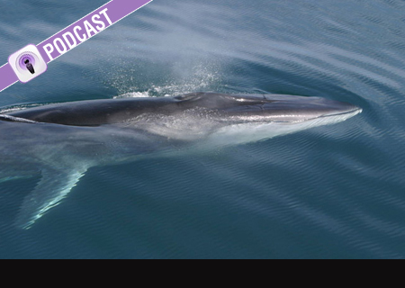
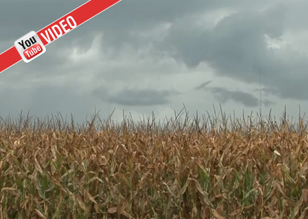
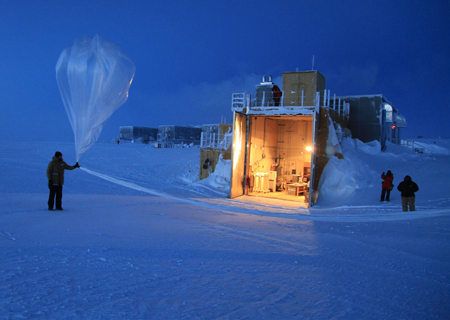
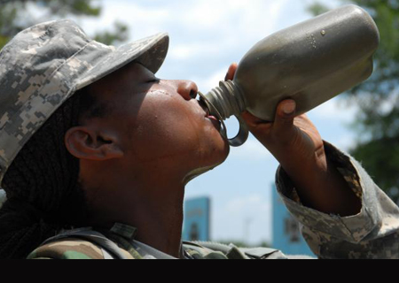
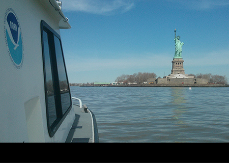
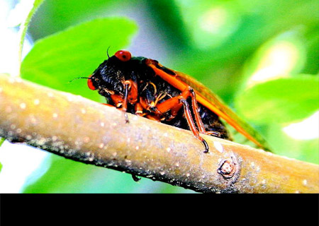
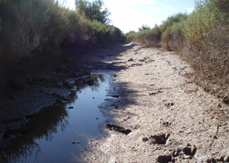

Safe boating makes for smooth sailing
Before you head out onto the water, get the forecast and don a life vest

To protect fin whales, scientists work on listening skills
NOAA researchers study whale songs to map endangered populations
To escape drought, slow and steady wins the race
See what it takes to 'break' drought conditions in the Plains

NOAA's draft five-year R&D plan open for comment
Take a closer look at our scientific research priorities for 2013-2017

'Open data' drives release of climate & health research
MATCH, an online data tool, could open door to new scientific insights

Post-Sandy surveys around the Statue of Liberty
NOAA working to re-establish safe navigation ahead of July 2013 reopening
NOAA data helping track cicada emergence
U.S. Climate Reference Network soil data used in NPR citizen scientist project

Drought continues to grip nation
Get the latest conditions and list of resources
- Global April temperatures were 13th highest on record; Year-to-date is eighth warmest period on record; North American snow cover was third largest
According to NOAA scientists, April 2013 was also the 37th consecutive April and 338th consecutive month (more than 28 years) with a global temperature above the 20th-century average. - April was cool, wet and had more snow on the ground for the contiguous U.S.; April temperatures were coolest since 1997
According to NOAA scientists, the average temperature for the contiguous United States during April was 49.7°F, 1.4°F below the 20th-century average. It was the 23rd coolest April on record. Below-average temperatures dominated the central United States.
All Releases
- New NOAA report examines national oil pollution threat from shipwrecks
- NOAA’s latest mobile app provides free nautical charts for recreational boating
- NOAA releases final report of Sandy service assessment
- First GOES-R instrument ready to be installed onto spacecraft
- New current meter at Stevens will feed data into NOAA’s real-time information system to allow ships to navigate more safely in New York harbor
- Subscribe to NOAA News [RSS]
- NOAA Education
Science Resources for Students and Teachers - NOAA Corps
The New Corps of Discovery video
View all of NOAA's social media sites